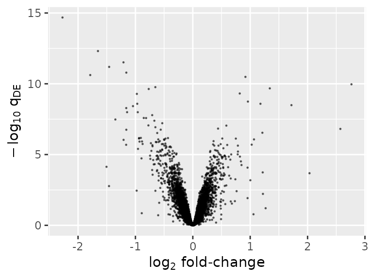
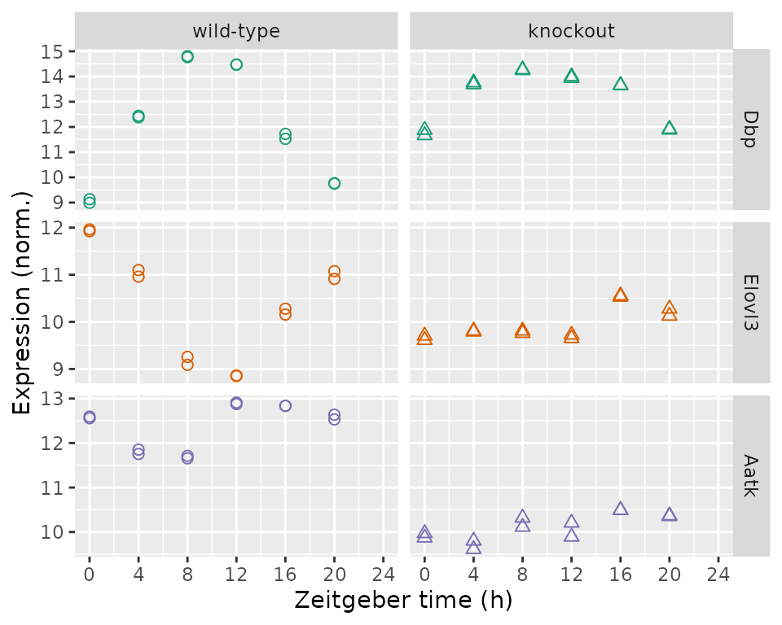

vignettes/introduction.Rmd
introduction.RmdLimoRhyde is a framework for differential analysis of rhythmic transcriptome data. This vignette goes through the typical steps of an analysis: identifying rhythmic genes, identifying differentially rhythmic genes, and identifying differentially expressed genes. The dataset is based on total RNA from livers of wild-type and Rev-erb\(\alpha/\beta\) knockout mice, with gene expression measured by microarray (GSE34018).
library('annotate')
library('data.table')
library('foreach')
library('GEOquery')
library('ggplot2')
library('knitr')
library('limma')
library('limorhyde')
library('org.Mm.eg.db')
source(system.file('extdata', 'vignette_functions.R', package = 'limorhyde'))Here we specify the zeitgeber period and the q-value cutoffs for rhythmic and differentially rhythmic genes.
period = 24
qvalRhyCutoff = 0.15
qvalDrCutoff = 0.1For simplicity, we use the GEOquery package to load the processed data previously downloaded from NCBI GEO.
eset = getGEO(filename = system.file('extdata', 'GSE34018_series_matrix.txt', package = 'limorhyde'))Now we construct the data.table of sample metadata.
sm = data.table(pData(phenoData(eset)))
sm = sm[, .(title, sample = geo_accession, genotype = `genotype/variation:ch1`)]
sm[, time := as.numeric(sub('_.*', '', sub('.*_ZT', '', title)))]
sm[, cond := factor(genotype, c('wild-type', 'Reverb alpha/beta DKO'),
c('wild-type', 'knockout'))]
setorderv(sm, c('cond', 'time'))
kable(sm[1:5, ])| title | sample | genotype | time | cond |
|---|---|---|---|---|
| wild-type liver_ZT0_rep 1 | GSM840516 | wild-type | 0 | wild-type |
| wild-type liver_ZT0_rep 2 | GSM840517 | wild-type | 0 | wild-type |
| wild-type liver_ZT4_rep 1 | GSM840518 | wild-type | 4 | wild-type |
| wild-type liver_ZT4_rep 2 | GSM840519 | wild-type | 4 | wild-type |
| wild-type liver_ZT8_rep 1 | GSM840520 | wild-type | 8 | wild-type |
Next we use limorhyde to calculate time_cos and time_sin, which are based on the first harmonic of a Fourier decomposition of the time column, and append them to the sm data.table.
Finally, we calculate the log-transformed expression values in terms of Entrez Gene IDs.
mapping = getGeneMapping(featureData(eset))
emat = log2(calcExprsByGene(eset, mapping))[, sm$sample]The next three steps use limma. We calculate the q-value of rhythmicity for each gene using that gene’s p-value for each condition and adjusting for multiple testing.
rhyLimma = foreach(condNow = unique(sm$cond), .combine = rbind) %do% {
design = model.matrix(~ time_cos + time_sin, data = sm[cond == condNow])
fit = lmFit(emat[, sm$cond == condNow], design)
fit = eBayes(fit, trend = TRUE)
rhyNow = data.table(topTable(fit, coef = 2:3, number = Inf), keep.rownames = TRUE)
setnames(rhyNow, 'rn', 'geneId')
rhyNow[, cond := condNow]
}
rhyLimmaSummary = rhyLimma[, .(P.Value = min(P.Value)), by = geneId]
rhyLimmaSummary[, adj.P.Val := p.adjust(P.Value, method = 'BH')]
setorderv(rhyLimmaSummary, 'adj.P.Val')
kable(rhyLimmaSummary[1:5, ])| geneId | P.Value | adj.P.Val |
|---|---|---|
| 13170 | 0 | 0e+00 |
| 353187 | 0 | 0e+00 |
| 15496 | 0 | 0e+00 |
| 12700 | 0 | 1e-07 |
| 321018 | 0 | 1e-07 |
Differential rhythmicity is based on statistical interactions between cond and the time components. We pass all genes to limma (whose Empirical Bayes does best with many genes), but keep results only for rhythmic genes, and adjust for multiple testing accordingly.
design = model.matrix(~ cond * (time_cos + time_sin), data = sm)
fit = lmFit(emat, design)
fit = eBayes(fit, trend = TRUE)
drLimma = data.table(topTable(fit, coef = 5:6, number = Inf), keep.rownames = TRUE)
setnames(drLimma, 'rn', 'geneId')
drLimma = drLimma[geneId %in% rhyLimmaSummary[adj.P.Val <= qvalRhyCutoff]$geneId]
drLimma[, adj.P.Val := p.adjust(P.Value, method = 'BH')]
setorderv(drLimma, 'adj.P.Val')
kable(drLimma[1:5, ])| geneId | condknockout.time_cos | condknockout.time_sin | AveExpr | F | P.Value | adj.P.Val |
|---|---|---|---|---|---|---|
| 12686 | -1.5326997 | -0.0433879 | 10.157657 | 63.69962 | 0 | 2.0e-07 |
| 353187 | 0.6825313 | -0.3539853 | 9.422013 | 63.33021 | 0 | 2.0e-07 |
| 270166 | -1.0453062 | 0.2676608 | 12.112605 | 57.37334 | 0 | 4.0e-07 |
| 207818 | -0.6412353 | -0.1518757 | 10.482197 | 57.04975 | 0 | 4.0e-07 |
| 15486 | -0.7315828 | 0.1282440 | 12.503645 | 44.83717 | 0 | 3.5e-06 |
Differential expression is based on the coefficient for cond in a linear model with no interaction terms. We pass all genes to limma, but keep results only for non-differentially rhythmic genes, and adjust for multiple testing accordingly.
design = model.matrix(~ cond + time_cos + time_sin, data = sm)
fit = lmFit(emat, design)
fit = eBayes(fit, trend = TRUE)
deLimma = data.table(topTable(fit, coef = 2, number = Inf), keep.rownames = TRUE)
setnames(deLimma, 'rn', 'geneId')
deLimma = deLimma[!(geneId %in% drLimma[adj.P.Val <= qvalDrCutoff]$geneId)]
deLimma[, adj.P.Val := p.adjust(P.Value, method = 'BH')]
setorderv(deLimma, 'adj.P.Val')
kable(deLimma[1:5, ])| geneId | logFC | AveExpr | t | P.Value | adj.P.Val | B |
|---|---|---|---|---|---|---|
| 11302 | -2.271205 | 11.260315 | -23.07298 | 0 | 0 | 33.11228 |
| 68680 | -1.653067 | 9.096749 | -18.20762 | 0 | 0 | 27.87922 |
| 67442 | -1.208461 | 14.375311 | -16.67075 | 0 | 0 | 25.88117 |
| 71904 | -1.457833 | 10.350755 | -16.00287 | 0 | 0 | 24.95100 |
| 15507 | -1.158876 | 9.441377 | -15.27806 | 0 | 0 | 23.89567 |
Numerous plots are possible. One is a volcano plot of differentially expressed genes.
ggplot(deLimma) +
geom_point(aes(x = logFC, y = -log10(adj.P.Val)), size = 0.2, alpha = 0.5) +
labs(x = expression(log[2]*' fold-change'), y = expression(-log[10]*' '*q[DE]))
Another is a plot of expression as a function of time and genotype for individual genes. Here we show, from top to bottom, the top rhythmic gene, top differentially rhythmic gene, and top differentially expressed gene by q-value.
geneIdsNow = c(rhyLimmaSummary$geneId[1], drLimma$geneId[1], deLimma$geneId[1])
geneSymbolsNow = unname(getSYMBOL(geneIdsNow, 'org.Mm.eg.db'))
df = data.table(t(emat[geneIdsNow, ]))
setnames(df, geneSymbolsNow)
df[, sample := colnames(emat[geneIdsNow, ])]
df = merge(df, sm[, .(sample, cond, time)], by = 'sample')
df = melt(df, measure.vars = geneSymbolsNow, variable.name = 'geneSymbol',
value.name = 'expr')
levels(df$geneSymbol) = geneSymbolsNow
ggplot(df) +
facet_grid(geneSymbol ~ cond, scales = 'free_y') +
geom_point(aes(x = time, y = expr, shape = cond, color = geneSymbol), size = 2) +
labs(x = 'Zeitgeber time (h)', y = 'Expression (norm.)') +
scale_shape(solid = FALSE, guide = FALSE) +
scale_color_brewer(type = 'qual', palette = 'Dark2', guide = 'none') +
scale_x_continuous(limits = c(0, 24), breaks = seq(0, 24, 4))
#> Warning: It is deprecated to specify `guide = FALSE` to remove a guide. Please
#> use `guide = "none"` instead.